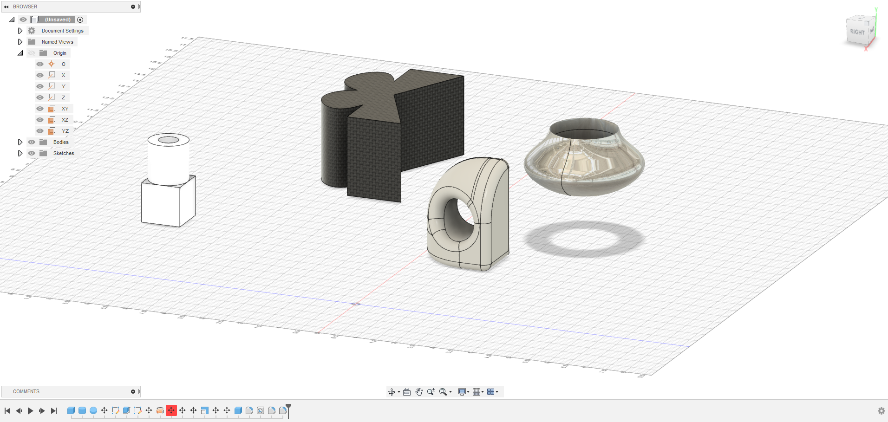
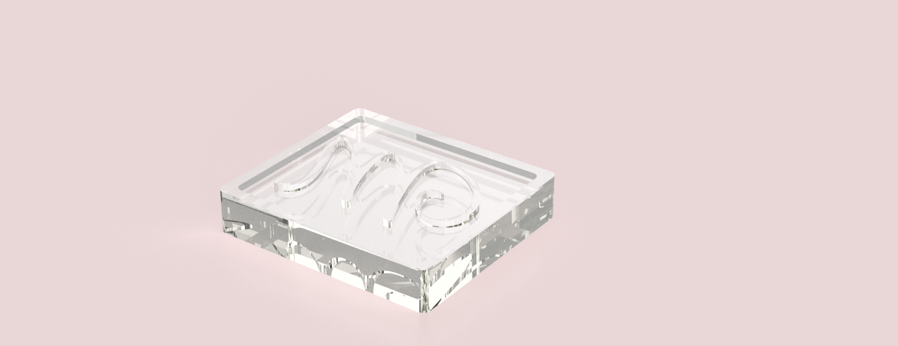
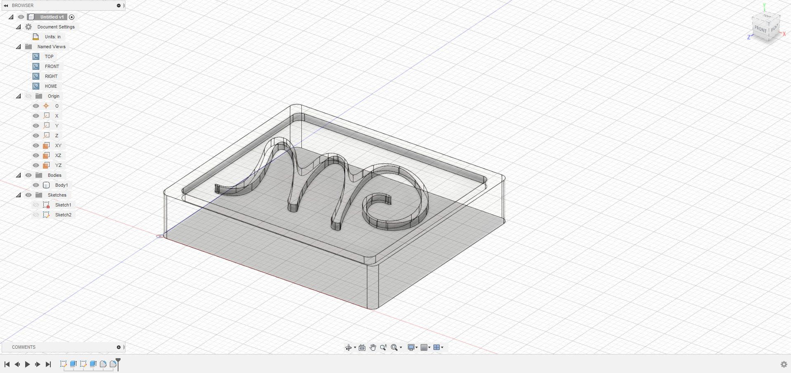
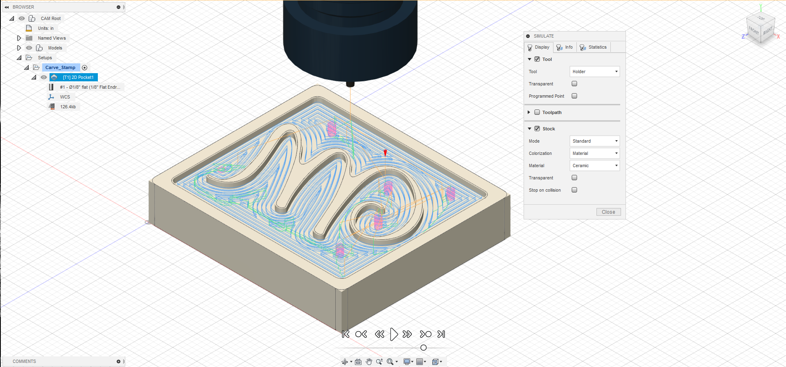
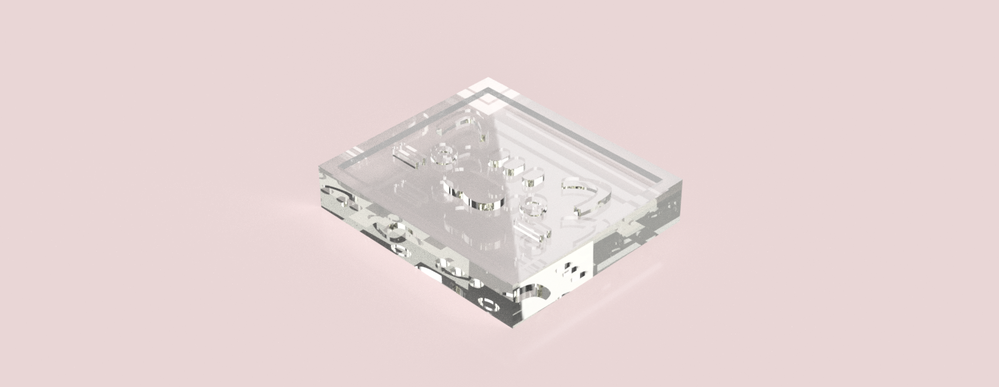
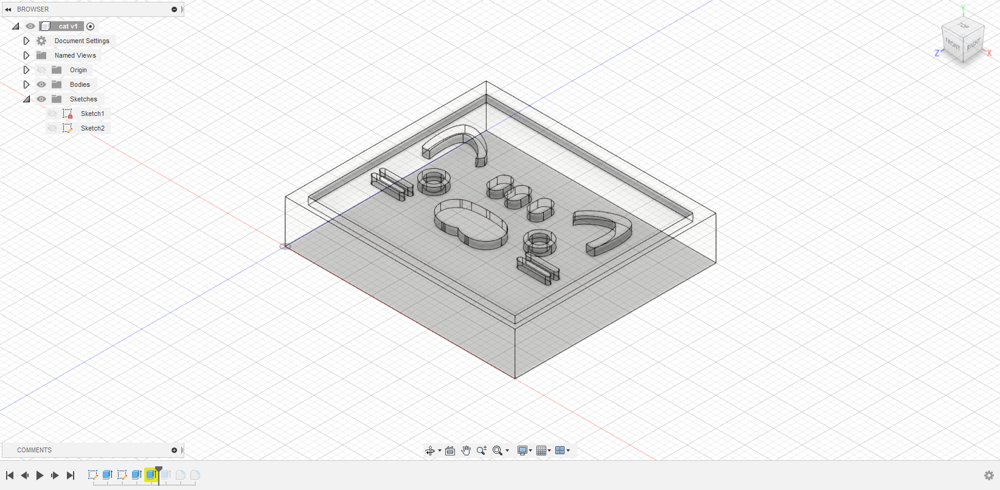
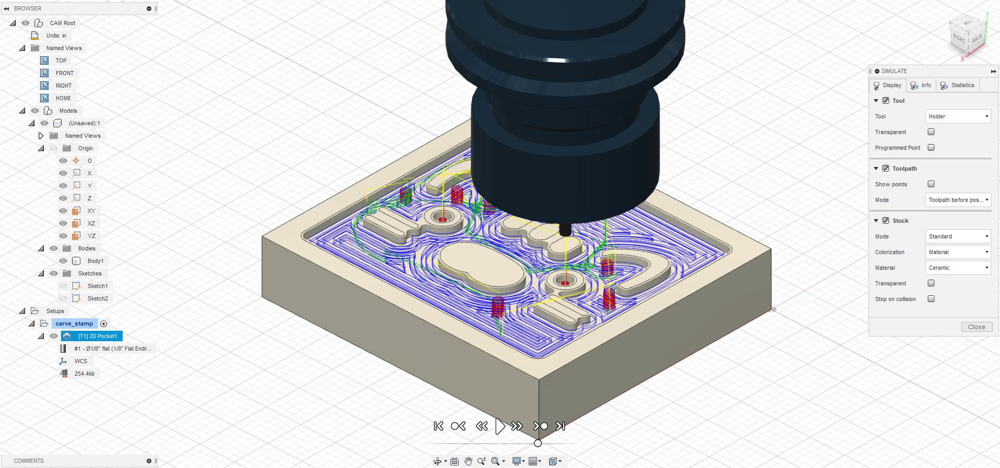

The program seems pretty straightforward. The tools are familiar because of Maya. I don't have a good impression of the program after finding that you can't do something as simple as moving a point without converting the whole model to a balloon animal. That seems like a really basic feature.
Tutorial
Nothing special here, just what came out of the tutorials. 
Exercises
These are my designs for the two exercises. I made a cat for the first one and spirals stacked on top of one another with radiaii following the fibonaci sequence.
Object I


Object II


Phase II
I made the letter M in a slightly scripty style. I edited the path of the font a little bit so the thinner indentations wouldn't look so bad.



For my other stamp, I made a stamp based on the face of a plushie that I have that I like a lot. I ended up running into issues here though. I got overconfident and didn't use the circle to check distances in Illustrator, so on the CAM path, it didn't cut it out quite right. I also had an issue with one of the inner outlines not responding to press/pull and intead throwing an error that I couldn't understand. Pretty frustrating.


